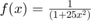
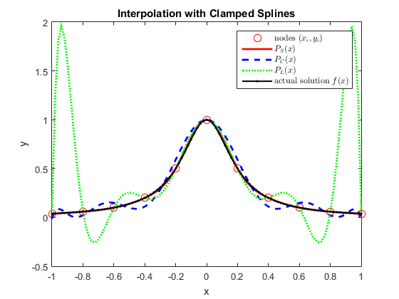

Lab 7 Solution
Lab Instructor: Valeria Barra DUE Tuesday 03-08-2016
Contents
First Problem: Interoplation with Clamped Splines
Problem 1)
Consider the interpolating clamped spline polynomial for  with 11-equispaced points on [-1,1].
clear all; close all; disp('Execution of Probl. 1)') % the set of data points given in the problem is not equi-spaced, but we % first define the interval and the nodes n = 11; % the number of data points a = -1; b = 1; xi = linspace(a,b,n); % define the function symbolically syms x; f = 1./(1 + 25.*(x.^2)); Df = diff(f); % find the derivative at the endpoints vl = double(subs(Df,{x},a)); vr = double(subs(Df,{x},b)); % now find the y-values yi = double(subs(f,{x},xi)); % now use the command spline to find the coeddicients of interpolation cs = spline(xi, [vl yi vr]); % define a domain domain = linspace(a,b,101); % now find the f-values of the interpolating polynomial pS = ppval(cs,domain); % now repeat the exercise with Chebychev nodes xiC = ChebyNodes(n,a,b); % call to the function that calculates the Chebyshev nodes yiC = double(subs(f,{x},xiC)); % call to the function with Chebyshev nodes pC= LagrangeInterpolation(xiC,yiC,domain); % now to compare the performance with the equi-spaced points Lagrangian % interpolation % call to the function with equi-spaced nodes pL= LagrangeInterpolation(xi,yi,domain); figure; % starts a new figure plot(xi,yi,'or','MarkerSize',8); hold on plot(domain,pS,'-r','Linewidth',2) hold on plot(domain,pC,'--b','Linewidth',2) hold on plot(domain,pL,':g','Linewidth',2) hold on F = double(subs(f,{x},domain)); plot(domain,F,'.-k','Linewidth',1.5) title('Interpolation with Clamped Splines') xlabel('x') ylabel('y') legend({'nodes $(x_i,y_i)$','$P_S(x)$','$P_C(x)$','$P_L(x)$','actual solution $f(x)$'},'interpreter','latex') Err_S = max(abs(pS -F)); % the error with P_S Err_C = max(abs(pC -F)); % the error with P_C Err_L = max(abs(pL -F)); % the error with P_L disp(['The max error with the cubic spline is ',num2str(Err_S)]) disp(['The max error with the Chebyshev nodes polynomial is ',num2str(Err_C)]) disp(['The max error with the Lagrange polynomial is ',num2str(Err_L)])
Execution of Probl. 1) The max error with the cubic spline is 0.021955 The max error with the Chebyshev nodes polynomial is 0.10893 The max error with the Lagrange polynomial is 1.9156
Conclusions: Comparing to the executions, we see that interpolation using the cubic spline is better than the one using Chebyshev nodes and Lagrange, respectively. Lagrange's polynomial highly oscillates towards the boundary of the domain, due to the fact that the nodes are not wisely distributed and it is a 10^th degree polynomial. Chebyshev does a better job fixing these oscillations, but still it is a 10^th degree polynomial. This behavior is totatlly controlled by the spline polynomial instead, since the max degree in each subinterval is 3.